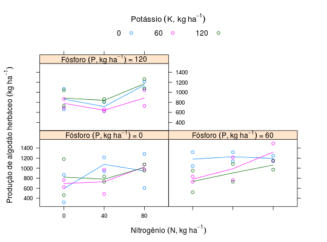

Produção de algodão herbáceo de um ensaio de adubação NPK \(3^3\) com confundimento (grupo W) de dois graus de liberdade da interação tripla. Cada combinação NPK teve duas repetições por bloco e o ensaio foi conduzido por Cavalcanti (1977) em Pernambuco.
Um data.frame com 54 observações e 6 variáveis, em que
NPKblocreptprodBARBIN (2013), pág. 137.
Cavalcanti, F. B. (1977). A adubação mineral na cultura do algodão (Gossypium hirsutum L.) no Estado de Pernambuco. Dissertação de Mestrado, Escola Superior de Agricultura "Luiz de Queiroz"/USP, Piracicaba.
library(lattice) data(BarbinPg137)#> Warning: data set ‘BarbinPg137’ not foundstr(BarbinPg137)#> 'data.frame': 54 obs. of 6 variables: #> $ N : num 0 0 0 40 40 40 80 80 80 0 ... #> $ P : num 0 60 120 0 60 120 0 60 120 0 ... #> $ K : num 0 120 60 60 0 120 120 60 0 0 ... #> $ bloc: Factor w/ 3 levels "1","2","3": 1 1 1 1 1 1 1 1 1 1 ... #> $ rept: int 1 1 1 1 1 1 1 1 1 2 ... #> $ prod: num 868 951 694 972 1319 ...x <- c("N", "P", "K") forms <- unlist(lapply(mapply(FUN = combn, m = 1:2, MoreArgs = list(x = x)), FUN = function(x) { paste0("~", apply(x, MARGIN = 2, FUN = paste, collapse = "+")) })) # A frequência das combinações simples e duplas. sapply(forms, xtabs, data = BarbinPg137)#> $`~N` #> N #> 0 40 80 #> 18 18 18 #> #> $`~P` #> P #> 0 60 120 #> 18 18 18 #> #> $`~K` #> K #> 0 60 120 #> 18 18 18 #> #> $`~N+P` #> P #> N 0 60 120 #> 0 6 6 6 #> 40 6 6 6 #> 80 6 6 6 #> #> $`~N+K` #> K #> N 0 60 120 #> 0 6 6 6 #> 40 6 6 6 #> 80 6 6 6 #> #> $`~P+K` #> K #> P 0 60 120 #> 0 6 6 6 #> 60 6 6 6 #> 120 6 6 6 #>xyplot(prod ~ as.factor(N) | as.factor(P), data = BarbinPg137, groups = K, type = c("p", "a"), auto.key = list(space = "top", columns = 3, title = expression( "Potássio"~(K * ", " * kg~ha^{-1})), cex.title = 1.1), strip = strip.custom(strip.names = TRUE, sep = " = ", var.name = expression( "Fósforo"~(P * ", " * kg~ha^{-1}))), xlab = expression("Nitrogênio"~(N * ", " * kg~ha^{-1})), ylab = expression( "Produção de algodão herbáceo"~(kg~ha^{-1})))